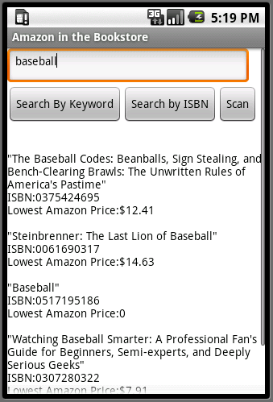
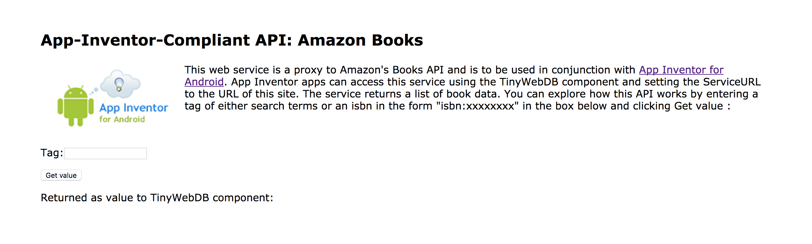
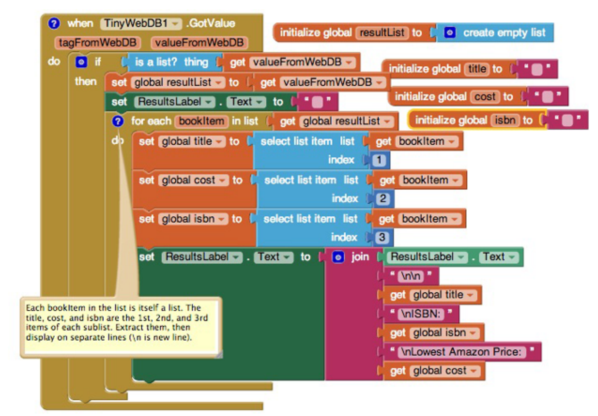

In this codelab, you'll make an app that allows you to look up the current lowest price of a book on Amazon.com.
What you'll learn
- Use the Barcode Scanner component.
- Access web services (Amazon's API) using the TinyWebDB component.
- Process information in the form of lists.
An application programming interface (API) is the messenger that takes your requests, tells a system what you want to do, and returns the response back to you.
If you have ever used the Facebook app on your phone, you are using a client program that communicates with the Facebook API server program.
In this codelab, you will create an Android client app that communicates with the Amazon API. Your app will request book and ISBN information from the Amazon API, and the API will return the list price of the book. Your app will then present the book data to the user.
Just like people from different cultures have different customs (e.g. shaking hands when meeting or kissing each other on the cheek), different APIs have different communication protocols. In this step, you will learn how information is formatted when communicating with the Amazon API.
- Go to http://aiamazonapi2.appspot.com/. You should see something like the image below. 
- Enter a topic (e.g. "dance") in the Tag field and then click
Get value. The web page will display the top five books returned from Amazon.
Challenge #1
Can you explain the different parts of the output shown below?
[['"Dance: Cinderella Retold (Romance a Medieval Fairytale series Book 3)"', '0.0', 'B01NCZ6T85'],
['"Dance"', '$10.43', '1481487078'],
['"Dance with Deception: Scandalous Secrets, Book 1 (Scandalous Secrets - Exclusive Edition)"', '0.0', 'B00NO2V0CS'],
['"A Dance with Dragons (A Song of Ice and Fire)"', '$5.33', '0553582011'],
['"Dance Mania Mad Libs"', '$2.09', '0843137126']]Challenge #2
Which book has ISBN 0062363603?
Create a new project called
AmazonBooks(no spaces).
- Set the screen title to "Amazon in the Bookstore".
Design your user interface so that at a minimum it has the following elements:
- a TextBox for entering keywords or ISBNs
- a Button to search by keyword
- a Button to search by ISBN
- a Button to scan a barcode
- a heading Label for Search Results
- a Label to display actual search results
- a TinyWebDB component
- a BarcodeScanner component
Challenges
- Give your components meaningful names.
- Set the Hint of the TextBox to "Enter keywords or ISBN".
- Set the ServiceURL property of the TinyWebDB component to
http://aiamazonapi2.appspot.com/.
When the user enters a search term and clicks on the Keyword Search Button, we want to invoke an Amazon search.
We can access the Amazon API by using our TinyWebDB component, which works just like the TinyDB component we used in a previous codelab.
Challenge #1
Make the correct Amazon search when the user clicks on the Keyword Search Button. The following blocks may be useful for this part:
Button.ClickEvent Handler blockTinyWebDB.GetValueblockTextBox.Textblock
Challenge #2
Make the ResultsLabel display the value returned by the Amazon search.
Make sure to check if the returned value is a list before displaying it. It won't be a list if the Amazon API is offline, or if no results can be found.
The following blocks may be useful for this part:
TinyWebDB.GotValueEvent Handler blockif/thenconditional blockis a list?blockset Label.Text toblockget valueFromWebDBblock
The code for searching by ISBN is similar to searching by keyword, but
in this case, the Amazon API expects the tag to be in the form of
isbn:xxxxxxxxxxxxx. Your user should not need to know this
protocol, so we want our app to add the "isbn:" prefix to the user's input.
Challenge
Make the correct Amazon search when the user clicks on the Search by ISBN button. The following blocks may be useful for this part:
Button.ClickEvent Handler blockTinyWebDB.GetValueblockTextBox.Textblockjoinblock""(string) block
When you call a web service (API) with TinyWebDB.GetValue,
there may be a delay before the data arrives and TinyWebDB.GotValue
is triggered. It is generally good practice to notify users that the
request is being processed to reassure them that the app has not
simply frozen.
Challenge
When the user clicks on either the Keyword Search Button or the ISBN Search Button, make the Results Label display "Searching Amazon...". The following blocks may be useful:
set Label.Text toblock""(string) block
Typing on a cell phone can be difficult and time-consuming for some people, so it would be nice if users could scan the barcode of a book instead of typing in the ISBN. Fortunately, App Inventor's Barcode Scanner component makes this feature easy to implement.
Challenge #1
Start up the scanner when the Scan Button is clicked.
Challenge #2
Start an ISBN search once the barcode has been scanned. The following blocks may be useful:
when BarcodeScanner.AfterScanEvent Handler blockset Label.Text toblockset TextBox.Text toblockTextBox.Textblockjoinblock""(string) blockget resultcall TinyWebDB.GetValue
Right now, the Results Label simply displays the value returned by
the Amazon API. While this does provide the user with all the
information, it is a bit difficult for users to read. In this step, your
goal is to modify the when TinyWebDB.GotValue event handler
so that the app displays book information in an easy-to-read, organized
manner.
Challenges
- Initialize a global variable called
resultListto be an empty list. Hint: Use thecreate an empty listblock. - Initialize three global variables to be empty strings (e.g.
""). Name the variablestitle,cost, andisbn. - If the value returned by the WebDB is a list, then store the value
using the
resultListvariable. - Set the text in the Result Label to be an empty string (e.g.
""). - Use the
for each...in listblock to loop through each book result inresultList. For each book result, assign the correct values to thetitle,cost, andisbnvariables. Hint: Use theselect list itemblock to select specific items from a list. - For each book result, you also want to update the Results label text accordingly.
Your code should look something like this.
You have used App Inventor to create the Amazon Books app.
What we've covered
- Use the Barcode Scanner component.
- Access web services (Amazon's API) using the TinyWebDB component.
- Process information in the form of lists.